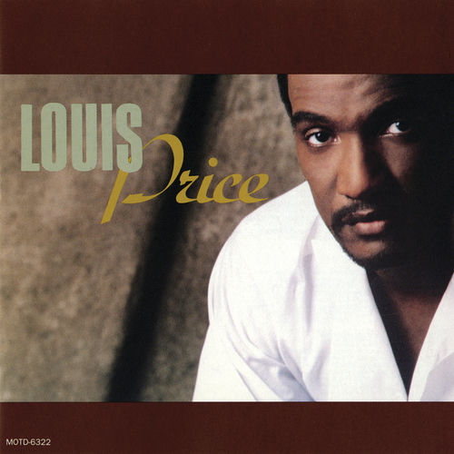

Louis Price
Louis Bernhardt Price is an American R&B and soul singer and actor notable for being the lead singer of the first post-Dennis Edwards led version of The Temptations from 1977 to 1979.
Complete Discography & Tracklists (4)